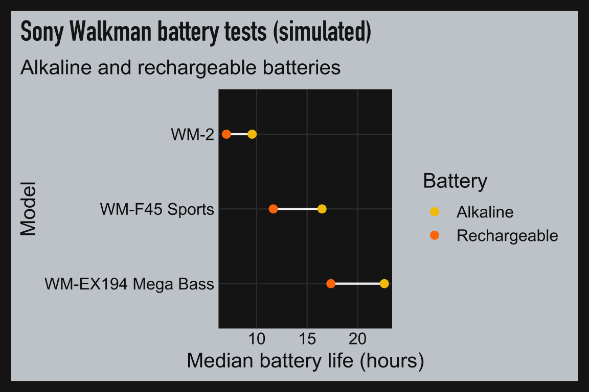
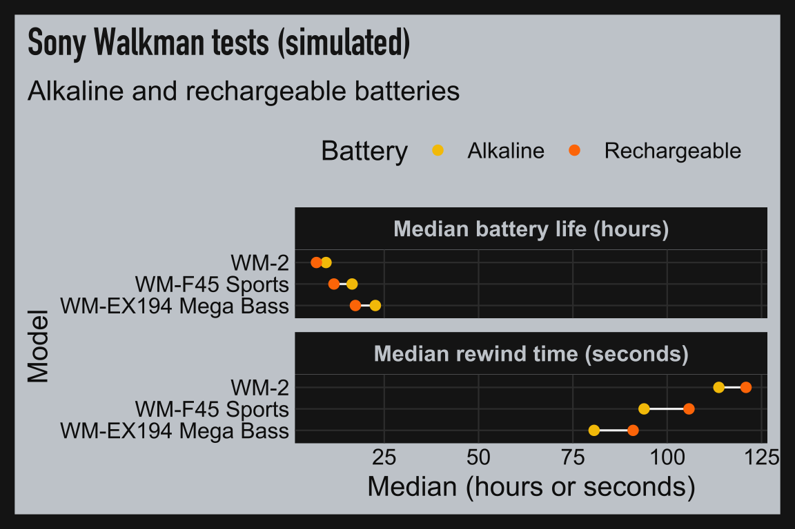
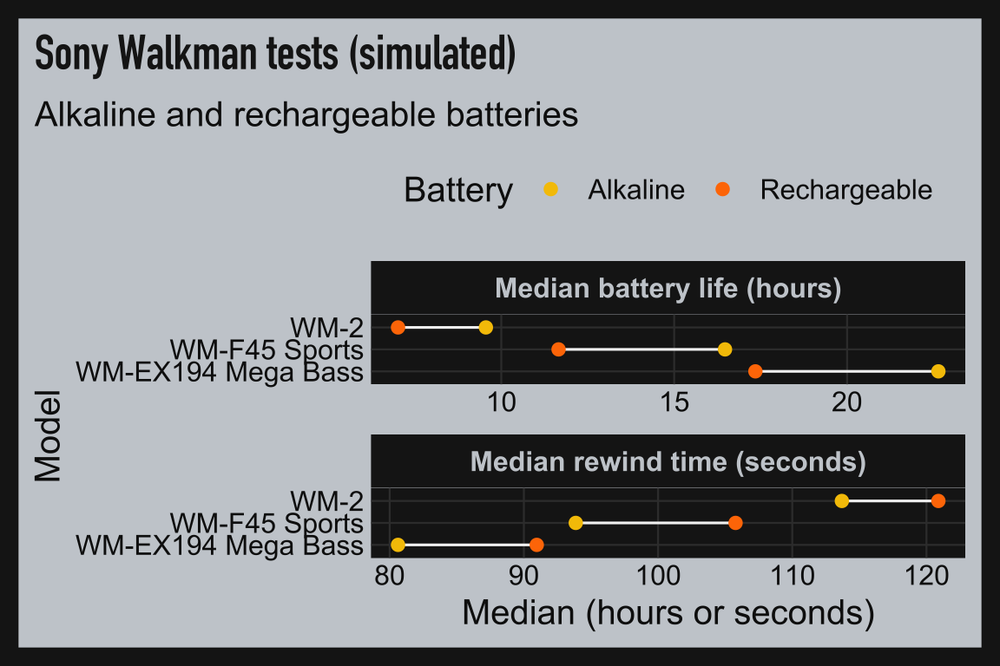

13 Cleveland dot plots
13.1 Description
Cleveland dot plots compare numbers with dots on a line and are more efficient than bar graphs. The graph lists the categories on the side and shows the data with dots along a line.
Typically, the graph contains two points representing the numerical value on the y axis, differentiated by color. A line connecting the two points represents the difference between the two categorical levels (the width of the line is the size of the difference).
13.2 Set up
PACKAGES:
Install packages.
show/hide
install.packages("faux")
library(faux) # for sim_design()
library(ggplot2)
library(dplyr) # for data manipulation
library(forcats) # for fct_rev()DATA:
In the 90s, a Sony Walkman went everywhere, and the batteries never seemed to last long enough. We’ll simulate a battery test: 20 tapes played until the batteries died for each combination of three Walkman models and two battery types. The faux package’s sim_design() function builds this kind of experiment for us. We give it the two factors (between), the number of tests in each combination (n), the average battery life for each combination (mu), and the standard deviation (sd). Then we calculate the median battery life for each model and battery (med_hours). Setting the seed with set.seed() means you’ll get the same 120 tests every time you run the code below.
show/hide
set.seed(1979)
walkman_tests <- faux::sim_design(
between = list(model = c("WM2", "Sports", "MegaBass"),
battery = c("Alkaline", "Rechargeable")),
n = 20,
mu = c(WM2_Alkaline = 10, WM2_Rechargeable = 7,
Sports_Alkaline = 16, Sports_Rechargeable = 12,
MegaBass_Alkaline = 22, MegaBass_Rechargeable = 17),
sd = 2, dv = "hours", long = TRUE, plot = FALSE) |>
as_tibble() |>
mutate(model = factor(model, levels = c("WM2", "Sports", "MegaBass"),
labels = c("WM-2", "WM-F45 Sports", "WM-EX194 Mega Bass")))
walkman_clev_dots <- walkman_tests |>
group_by(battery, model) |>
summarise(med_hours = median(hours), .groups = "drop")
glimpse(walkman_clev_dots)
#> Rows: 6
#> Columns: 3
#> $ battery <fct> Alkaline, Alkaline, Alkaline, …
#> $ model <fct> WM-2, WM-F45 Sports, WM-EX194 …
#> $ med_hours <dbl> 9.555329, 16.469916, 22.640003…13.3 Distribution
A Cleveland dot plot shows two summaries per row and the gap between them. Here each dot is the median of 20 battery tests, and each line is the difference between alkaline and rechargeable batteries for one model. Below we’ll move from the tests, to a picture, to the formula.
COUNT IT:
Start with the first five tests.
show/hide
head(walkman_tests, 5)These are alkaline batteries in the WM-2, and they lasted between about 8 and 13 hours. The table below puts the two battery types side by side for each model and calculates the gap.
show/hide
walkman_clev_dots |>
tidyr::pivot_wider(names_from = battery, values_from = med_hours) |>
mutate(difference = Alkaline - Rechargeable)Alkaline batteries last longer in every model, and the gap grows from about 2.5 hours in the WM-2 to about 5 hours in the Mega Bass.
DRAW IT:
The graph below puts all 120 tests behind the dots. Each small point is one test, and the big dots are the medians. The medians sit in the middle of their clouds of tests, and the lines connect the two medians for each model.
show/hide
ggplot(data = walkman_clev_dots,
aes(x = med_hours, y = fct_rev(model))) +
geom_jitter(data = walkman_tests,
aes(x = hours, color = battery),
height = 0.15, width = 0, alpha = 0.5, size = 1) +
geom_line(aes(group = model), linewidth = 0.75) +
geom_point(aes(color = battery), size = 3.5) +
labs(x = "Battery life (hours)", y = "Model", color = "Battery")
NAME IT:
sim_design() draws every test from a normal distribution with the mean for its model and battery type:
\[ \text{hours} \sim \text{Normal}(\mu_{\text{model, battery}}, \; \sigma = 2) \]
The line in each row estimates the difference between two of these means, \(\mu_{\text{alkaline}} - \mu_{\text{rechargeable}}\), which we set to 3, 4, and 5 hours. Each median is built from only 20 tests, so it wobbles. For a normal distribution, the median of \(n\) values has a standard error of about \(1.25\,\sigma / \sqrt{n} = 1.25 \times 2 / \sqrt{20} \approx 0.56\) hours, and the difference between two medians wobbles by about \(\sqrt{2} \times 0.56 \approx 0.8\) hours. That’s why the WM-2 gap came out at about 2.5 hours instead of 3. Try raising n in sim_design() and the gaps settle closer to 3, 4, and 5.
13.4 Grammar
CODE:
Create labels with
labs()Initialize the graph with
ggplot()and providedataMap the
med_hoursto thexaxis, andmodelto theyaxis, but wrapmodelinforcats::fct_rev().Add
geom_line(), and mapmodelto thegroupaesthetic. Set thelinewidthto0.75Add
geom_point()and mapbatterytocoloraesthetic. Set thesizeto2.25
show/hide
labs_clev_dots <- labs(
title = "Sony Walkman battery tests (simulated)",
subtitle = "Alkaline and rechargeable batteries",
x = "Median battery life (hours)",
y = "Model",
color = "Battery")
ggp2_clev_dots <- ggplot(data = walkman_clev_dots,
mapping = aes(x = med_hours,
y = fct_rev(model))) +
geom_line(aes(group = model),
linewidth = 0.75) +
geom_point(aes(color = battery),
size = 2.25)
ggp2_clev_dots +
labs_clev_dotsGRAPH:

13.5 More info
Cleveland dot plots are also helpful when comparing multiple differences on a common scale.
13.5.1 Common scale
SCALE:
Simulate a second measurement for every test: the time it takes to rewind a 60 minute tape (
rewind_seconds). Rewinding uses the motor, so weaker rechargeable batteries rewind more slowly.Calculate the median battery life and the median rewind time for each
batteryandmodel. These variables need to have ‘showtime-ready’ names because they’ll be used in our facets.Pivot the new columns into a long (tidy) format with
median_measurecontaining the name of the variable, andmedian_valuecontaining the numbers.Finally, convert
median_measureinto a factor.
show/hide
set.seed(1980)
walkman_rewind <- faux::sim_design(
between = list(model = c("WM2", "Sports", "MegaBass"),
battery = c("Alkaline", "Rechargeable")),
n = 20,
mu = c(WM2_Alkaline = 110, WM2_Rechargeable = 125,
Sports_Alkaline = 95, Sports_Rechargeable = 105,
MegaBass_Alkaline = 80, MegaBass_Rechargeable = 90),
sd = 8, dv = "rewind_seconds", long = TRUE, plot = FALSE) |>
as_tibble()
walkman_clev_dots2 <- walkman_tests |>
dplyr::mutate(rewind_seconds = walkman_rewind$rewind_seconds) |>
dplyr::group_by(battery, model) |>
dplyr::summarise(
`Median battery life (hours)` = median(hours),
`Median rewind time (seconds)` = median(rewind_seconds)) |>
dplyr::ungroup() |>
tidyr::pivot_longer(cols = starts_with("Med"),
names_to = "median_measure",
values_to = "median_value") |>
dplyr::mutate(median_measure = factor(median_measure))
#> `summarise()` has regrouped the output.
#> ℹ Summaries were computed grouped by battery and
#> model.
#> ℹ Output is grouped by battery.
#> ℹ Use `summarise(.groups = "drop_last")` to
#> silence this message.
#> ℹ Use `summarise(.by = c(battery, model))` for
#> per-operation grouping (`?dplyr::dplyr_by`)
#> instead.
glimpse(walkman_clev_dots2)
#> Rows: 12
#> Columns: 4
#> $ battery <fct> Alkaline, Alkaline, Alkal…
#> $ model <fct> WM-2, WM-2, WM-F45 Sports…
#> $ median_measure <fct> Median battery life (hour…
#> $ median_value <dbl> 9.555329, 113.696775, 16.…13.5.2 Scales
scales:
Re-create labels
Initialize the graph with
ggplot()and providedataMap the
median_valueto thexaxis, andmodelto theyaxis, but wrapmodelinforcats::fct_rev().Add
geom_line(), and mapmodelto thegroupaesthetic. Set thelinewidthto0.75Add
geom_point()and mapbatterytocoloraesthetic. Set thesizeto2.25Add
facet_wrap()and facet bymedian_measure, settingshrinktoTRUEMove the legend with
theme(legend.position = "top")
show/hide
labs_clev_dots2 <- labs(
title = "Sony Walkman tests (simulated)",
subtitle = "Alkaline and rechargeable batteries",
x = "Median (hours or seconds)",
y = "Model",
color = "Battery")
ggp2_clev_dots2 <- ggplot(data = walkman_clev_dots2,
mapping = aes(x = median_value,
y = fct_rev(model))) +
geom_line(aes(group = model),
linewidth = 0.55) +
geom_point(aes(color = battery),
size = 2) +
facet_wrap(. ~ median_measure,
shrink = TRUE, nrow = 2) +
theme(legend.position = "top")
ggp2_clev_dots2 +
labs_clev_dots2
On a shared scale, the battery life differences (a few hours) are so small next to the rewind times (about 80 to 120 seconds) that the battery life dots nearly collapse into a single point.
CAUTION when using scales = "free_x": The graph below gives each measure its own x axis. Alkaline batteries last longer and rewind faster in every model, but the magnitude of the differences should be interpreted with caution because the length of the lines can’t be directly compared across the two panels!
show/hide
ggp2_clev_dots2_free_x <- ggplot(data = walkman_clev_dots2,
mapping = aes(x = median_value,
y = fct_rev(model))) +
geom_line(aes(group = model),
linewidth = 0.55) +
geom_point(aes(color = battery),
size = 2) +
facet_wrap(. ~ median_measure,
shrink = TRUE, nrow = 2,
scales = "free_x") +
theme(legend.position = "top")
ggp2_clev_dots2_free_x +
labs_clev_dots2